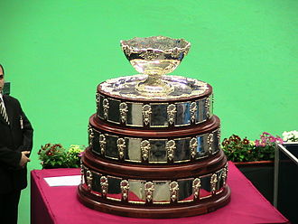

Кубок Девіса (англ. Davis Cup) — найбільші міжнародні командні змагання в чоловічому тенісі. Проводиться щорічно Міжнародною федерацією тенісу. Команди тенісистів з різних країн проводять матчі між собою з вибуванням команди, що програла, з турніру. Еквівалент Кубка Девіса серед жіночих команд — Кубок Федерації.
 Головна